🗼 도쿄 14건
팝업스토어 · 5
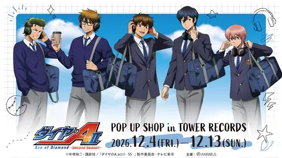
TV애니 『다이아의 A actⅡ -Second Season-』 POP UP SHOP in TOWER RECORDS (시부야)12/4(금) ~ 12/13(일)📍 타워레코드 시부야점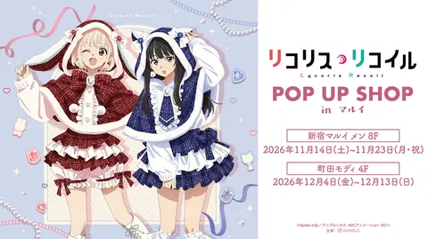
리코리스 리코일 POP UP SHOP in 마루이 (마치다 모디·폰초 스타일)12/4(금) ~ 12/13(일)📍 마치다 모디 4층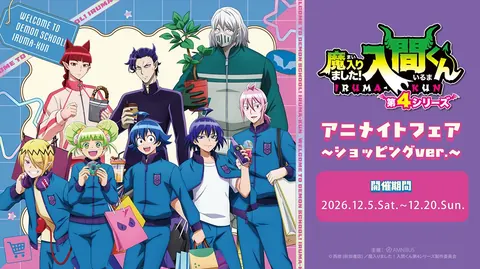
마계 입문했습니다! 이루마 군 애니메이트 페어12/5(토) ~ 12/20(일)📍 애니메이트 이케부쿠로 본점·아키하바라점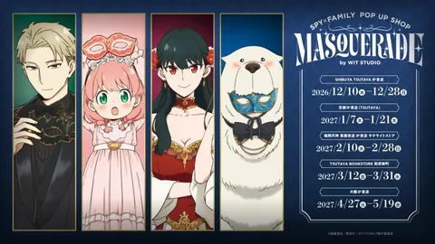
스파이 패밀리 POP UP SHOP -MASQUERADE- (시부야 츠타야 IP서점)12/10(목) ~ 12/28(월)📍 SHIBUYA TSUTAYA 6층 IP서점 (시부야)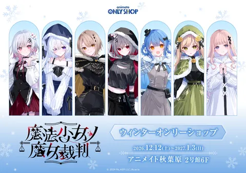
마법소녀의 마녀재판 윈터 온리숍 (애니메이트 아키하바라 2호관)12/12(토) ~ 1/3(일)📍 애니메이트 아키하바라점 2호관 6층콜라보카페 · 1
전시·행사 · 2
흡혈귀는 툭하면 죽는다展 연재 10주년 기념 파티 FINAL (기치조지 갤러리 제논)12/5(토) ~ 12/27(일)📍 기치조지 갤러리 제논아쿠타미 게게 『주술회전』 완결전 (신주쿠)12/25(금) ~ 1/25(월)📍 신주쿠 스미토모 빌딩 삼각광장
플리마켓 · 6
시부야 키타야 공원 Vintage & Artisan Market12/12(토)📍 시부야구립 키타야 공원 (시부야구 진난 1-7-3)시부야 키타야 공원 Vintage & Artisan Market12/13(일)📍 시부야구립 키타야 공원 (시부야구 진난 1-7-3)시부야 키타야 공원 Vintage & Artisan Market12/20(일)📍 시부야구립 키타야 공원 (시부야구 진난 1-7-3)
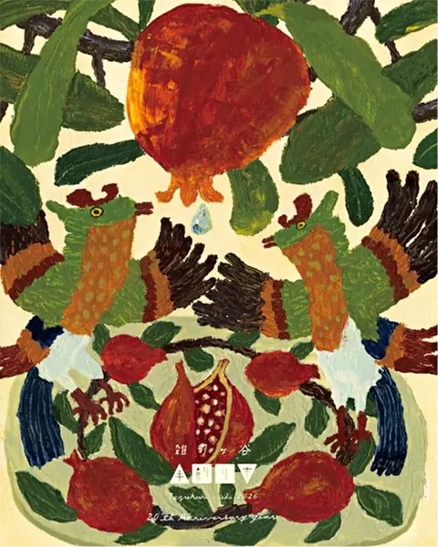
조시가야 데즈쿠리이치 (수공예 시장)12/20(일)📍 조시가야 기시보진도시부야 키타야 공원 Vintage & Artisan Market12/26(토)📍 시부야구립 키타야 공원 (시부야구 진난 1-7-3)시부야 키타야 공원 Vintage & Artisan Market12/27(일)📍 시부야구립 키타야 공원 (시부야구 진난 1-7-3)🏯 오사카 20건
팝업스토어 · 13
TV애니 『다이아의 A actⅡ -Second Season-』 POP UP SHOP in TOWER RECORDS (아베노 Hoop)12/4(금) ~ 12/13(일)📍 타워레코드 아베노 Hoop점
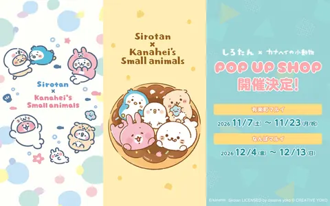
시로탄 × 카나헤이의 소동물 POP UP SHOP (오사카)12/4(금) ~ 12/13(일)📍 난바 마루이 5층 이벤트 스페이스아이돌마스터 밀리언 라이브! ARC-FLAGS 팝업 코너 (코토부키야 닛폰바시)12/4(금) ~ 12/20(일)📍 코토부키야 닛폰바시점「바키 시리즈」 35주년 기념 POP UP SHOP (난바 마루이)12/5(토) ~ 12/13(일)📍 난바 마루이 5층 이벤트 스페이스마계 입문했습니다! 이루마 군 애니메이트 페어 (오사카)12/5(토) ~ 12/20(일)📍 애니메이트 오사카 닛폰바시점·우메다점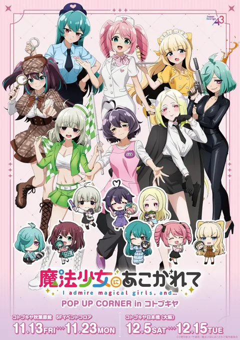
마법소녀를 동경해서 POP UP CORNER in 고토부키야 (오사카)12/5(토) ~ 12/15(화)📍 고토부키야 닛폰바시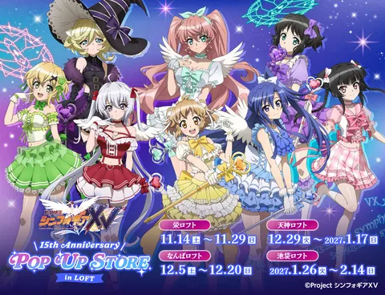
전희절창 심포기어 XV 15th Anniversary POP UP in LOFT (난바)12/5(토) ~ 12/20(일)📍 난바 파크스 5층 난바 로프트 특설 회장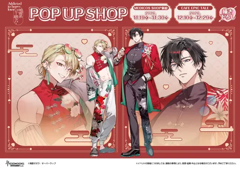
지뢰계 헤비급 러버 팝업 (오사카 닛폰바시)12/10(목) ~ 12/29(화)📍 CAFE EPIC TALE (닛폰바시 엑제 레지던스 타워 1층)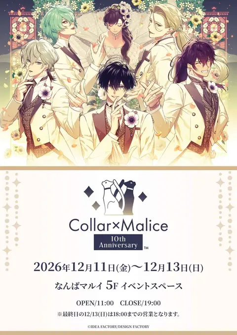
Collar×Malice 10th Anniversary (난바 마루이)12/11(금) ~ 12/13(일)📍 난바 마루이 5층 이벤트 스페이스반지의 제왕 25주년 POP-UP STORE (덴노지 미오)12/18(금) ~ 1/4(월)📍 덴노지 미오 6F (만화전 덴노지)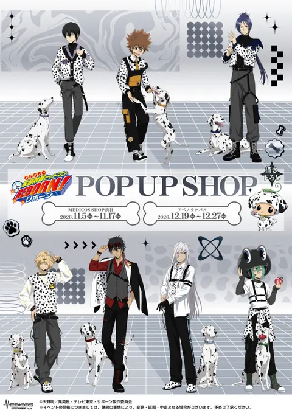
가정교사 히트맨 REBORN! POP UP SHOP (아베노 라쿠바스)12/19(토) ~ 12/27(일)📍 아베노 라쿠바스 (아베노 Hoop 4F)단간론파 시리즈×ORIHARA POP UP SHOP (난바 마루이)12/25(금) ~ 1/11(월)📍 난바 마루이 5층 이벤트 스페이스에스더 버니 × 마이멜로디 POP-UP STORE (루쿠아 이레)12/25(금) ~ 1/7(목)📍 루쿠아 이레 2F콜라보카페 · 2
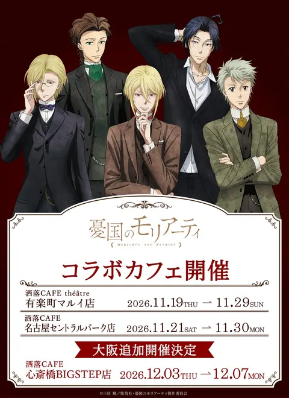
우국의 모리아티 콜라보 카페 (오사카 신사이바시)12/3(목) ~ 12/7(월)📍 샤레 CAFE 신사이바시 BIGSTEP점 (빅스텝 3층)사이키 쿠스오의 재난 콜라보 카페 「ΨCHIC DINER」 (오사카)12/9(수) ~ 1/11(월)📍 CAFE EPIC TALE (닛폰바시 엑제 레지던스 타워 1층)전시·행사 · 5
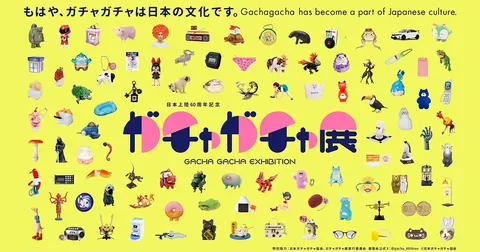
가챠가챠展 in 오사카 (난바 스카이오)12/3(목) ~ 1/12(화)📍 난바 스카이오 7층 컨벤션 홀아이돌리시 세븐 in NAMJATOWN ~11th Anniversary Festival~ (오사카 우메다)12/4(금) ~ 1/11(월)📍 반다이남코 Cross Store 오사카 우메다 (HEP FIVE)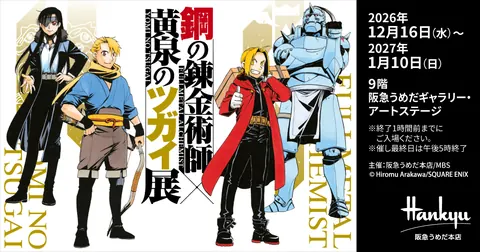
강철의 연금술사×황천의 츠가이展 (한큐 우메다 본점)12/16(수) ~ 1/10(일)📍 한큐 우메다 본점 9층 한큐 우메다 갤러리·아트 스테이지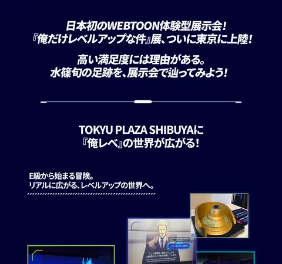
『나 혼자만 레벨업』展 오사카 (라라포트 EXPOCITY)12/18(금) ~ 4/18(일)📍 미쓰이 쇼핑파크 라라포트 EXPOCITY 내 특설 회장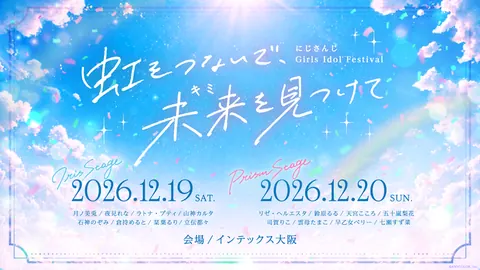
니지산지 걸즈 아이돌 페스티벌 (인텍스 오사카)12/19(토) ~ 12/20(일)📍 인텍스 오사카🍜 후쿠오카 6건
팝업스토어 · 4
문호 스트레이독스 × h.NAOTO 於 마루이 탈옥유희 편 (하카타 마루이)12/4(금) ~ 12/13(일)📍 하카타 마루이 5층 이벤트 스페이스마계 입문했습니다! 이루마 군 애니메이트 페어 (후쿠오카)12/5(토) ~ 12/20(일)📍 애니메이트 라식 후쿠오카 텐진점
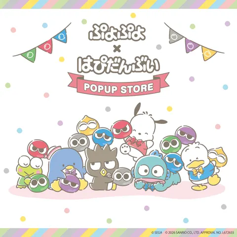
뿌요뿌요 × 하피단V POPUP STORE (후쿠오카)12/10(목) ~ 12/20(일)📍 라라포트 후쿠오카 로프트 (2F)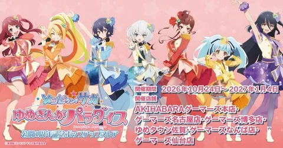
극장판 『좀비랜드 사가 유메긴가 파라다이스』 개봉 1주년 기념 팝업 스토어 (게이머즈 하카타점)12/19(토) ~ 1/4(월)📍 게이머즈 하카타점전시·행사 · 2
🗾 전국 10건
쿠지 · 9
이치방쿠지 극장판 약사의 혼잣말 「망비의 비보」12/5(토)📍 전국 판매처 (편의점·서점 등)이치방쿠지 에반게리온 신극장판: 파12/5(토)📍 전국 판매처 (편의점·서점 등)이치방쿠지 금색의 갓슈!!12/12(토)📍 전국 판매처 (편의점·서점 등)
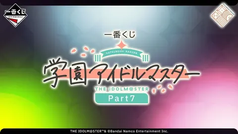
이치방쿠지 학원 아이돌마스터 Part712/12(토)📍 전국 판매처 (편의점·서점 등)이치방쿠지 오등분의 신부* ~beachside memories~12/16(수)📍 전국 판매처 (편의점·서점 등)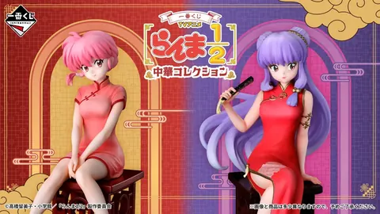
이치방쿠지 란마 1/2 ~중화 컬렉션~12/18(금)📍 전국 판매처 (편의점·서점 등)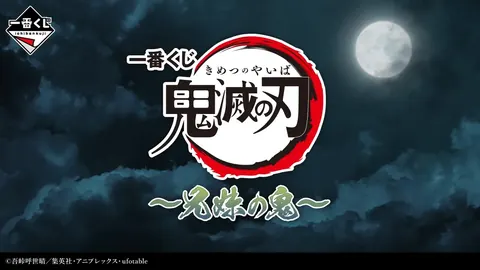
이치방쿠지 귀멸의 칼날 ~남매의 혈귀~12/21(월)📍 이치방쿠지 공식 숍·이치방쿠지 ONLINE이치방쿠지 신 테니스의 왕자 -나는 위로 갈 거야-12/24(목)📍 전국 판매처 (편의점·서점 등)이치방쿠지 블루 아카이브 vol.412/26(토)📍 전국 판매처 (편의점·서점 등)잡지 부록 · 1
일정·가격은 바뀔 수 있어요. 방문 전 각 행사 공식 사이트를 꼭 확인해 주세요. 11월 모아보기 →